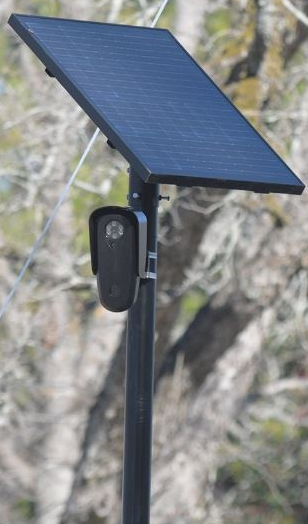
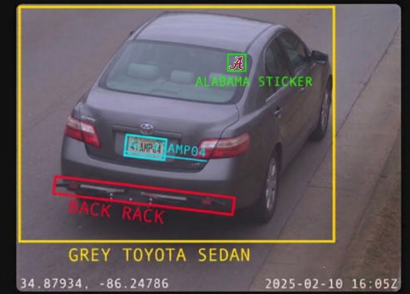

Recording now · Florence · Muscle Shoals · Sheffield · Tuscumbia
Someone is logging every car that drives through the Shoals.
Flock Safety cameras read and store your license plate as you pass, recording where you were and when. We're here to make sure people in the Shoals know it's happening, and to organize to get these cameras removed.
Start here
Learn what's watching you
A few things worth understanding. Lots of information in each tab.
What is a Flock camera? The hardware, and what it actually records

Flock Safety sells automated license plate readers (ALPRs), which are solar powered cameras usually mounted on a small pole near a road. As you drive past, the camera photographs your car, reads your plate, and records the time and location. It builds a searchable history of where vehicles have been.
Police departments buy access to this data, often on annual contracts. Many networks are also shared between agencies, so a plate captured here can be searched by departments far outside the Shoals. Most people have no idea the cameras are there or that their movements are being logged.
These aren't simple traffic cameras. Flock markets its system as AI powered, and it does more than read plates. Its "Vehicle Fingerprint" technology uses machine learning to catalog a car's make, color, body type, dents, roof racks, bumper stickers, and other features, so police can search for a vehicle even without a plate number. Flock's newer Condor cameras can automatically pan, tilt, and zoom to detect and follow people. Flock says its plate readers don't use facial recognition and don't identify individuals, a distinction critics argue is thin once a camera is zooming in on faces.

Sources: BGR, Wikipedia, and Flock's own policy pages.
Why it matters The warrant loophole, explained plainly
Privacy is a prerequisite for freedom. These cameras strip it away.
Flock cameras are a kind of surveillance we don't have a good name for yet: private surveillance, run for the government. A company most people have never heard of gets to record every time you drive to the grocery store, the doctor, your church, a protest, or anywhere else, and keep that record.
Here's why that matters. The police aren't allowed to follow you around town, log everywhere you go, and keep a permanent record of it. If they suspect you of a crime, they have to bring evidence to a judge and get permission first. That check of a judge, probable cause, and a warrant is what stands between ordinary life and unreasonable search and seizure.
Flock is the loophole. Because Flock is a private company, it isn't bound by those rules. It can track everyone, all the time, no suspicion required. But Flock works hand in hand with the police. So instead of asking a judge for permission, an officer can simply ask Flock where your car has been for the past month. The warrant requirement doesn't get satisfied. It just gets skipped.
That's the real problem: surveillance the government could never legally run itself, bought off the shelf from a company that can.
The law is starting to catch up What the Supreme Court's Chatrie ruling means for this
Here's the part that gives us real hope, and it's worth understanding because it's the strongest legal ground we stand on.
In 2026, the Supreme Court handed down its first big Fourth Amendment case in six years: Chatrie v. United States. It was a major win for privacy. The Court ruled that "geofence" searches, which pull cellphone location data to figure out everyone who was in a certain area at a certain time, are searches under the Fourth Amendment. That means police need probable cause and a warrant to do them.
Just as important, the Court pushed back on something called the "third-party doctrine." For years, the government argued that once your data is held by some company (your phone carrier, an app, a private service), you've basically given up your Fourth Amendment protection over it, so they can grab it without a warrant. Chatrie said no: you can still have a reasonable expectation of privacy in your location history even when a third party is holding it.
Look at how directly that lines up with Flock. A private company holds a detailed history of everywhere your car has been, and police tap into it without a warrant, using the exact "it's held by a third party" logic the Supreme Court just rejected for location data. Chatrie didn't rule on Flock specifically, so this isn't a done deal. But the reasoning points right at it, and it's why we think warrantless plate tracking is on borrowed time, legally speaking.
Background on the ruling: Chatrie v. United States.
Your tax dollars pay for it Who's buying these, and with whose money
Flock cameras aren't free. Local police departments buy them on contracts that can run tens of thousands of dollars a year, paid out of city budgets, which means paid by you. Residents are funding a system that surveils those same residents, often without ever having been asked in a public vote.
Flock says it doesn't sell your data, and that customers own it. Take them at their word. The record still shows the safeguards failing in practice.
So the honest answer to "how do we know the promises are true?" is: we don't, and several cities have learned the hard way that they weren't. Once the cameras are up and the data exists, control over who sees it has proven very hard to guarantee, and impossible to take back after the fact. The only reliable way to keep your movements from being searched is for the data not to be collected in the first place.
It's already storing more than plates What one researcher found in the data
Flock likes to say these are just license plate readers. But independent security researcher Benn Jordan dug into how the system actually handles the images it captures, and found something that doesn't match that story.
According to his investigation, the cameras don't only photograph plates. They capture images of all kinds of things that aren't vehicles at all, and rather than deleting those non-vehicle images, the system sorts them off into a separate folder and keeps them. Think about that. If the whole purpose is reading license plates, there's no reason to be holding onto photos of everything and everyone else the camera happens to see. But it is.
That's the thing about "it only does X." Once the hardware is out there capturing everything in view, what it does with those images is a policy choice, and policies change. The camera is already seeing far more than a plate. Whether that extra gets used, and how, is up to whoever controls the system, not you.
See Benn Jordan's work, linked in our videos and resources section below.
Cameras today, more tomorrow Drones now, and the radios already built into the cameras
License plate readers are only the start, and this is the part we most want people to think about, because it's the reason to act now instead of later.
Flock has already moved into drones. It acquired a "Drone as First Responder" company and is rolling out programs that let police launch aircraft to a location and follow vehicles from the air. The company has said it aims to expand these drone programs to around 100 cities. A camera on a pole records the cars that pass one fixed spot. A drone can follow you, leaving your driveway, across town, watching where you stop.
And here's the part most people don't know. When independent researchers physically took apart Flock cameras to see what's inside, they found the devices don't just have a cellular connection. They also contain Bluetooth and WiFi radios. The technology that would let one of these cameras detect the wireless devices around it, your phone, your smartwatch, your earbuds, your car's own Bluetooth, is already physically built into the hardware on the pole.
[YOUR WORDS HERE — this is where you explain, in your own voice, what that capability could mean in the future and why that makes it worth stopping now.]
That's why the time to draw the line is before the network is finished being built, not after. It is far easier to keep new surveillance out than to peel it back once the poles are up, the contracts are signed, and the budgets depend on it.
Sources: teardown documenting the cameras' Bluetooth/WiFi radios and chipsets by Ryan O'Horo; background on how passive wireless and Bluetooth tracking works via the EFF's Street-Level Surveillance project.
The record
This isn't hypothetical
Documented cases of these systems being abused, and cameras turning up where they shouldn't be.
Police have used these systems to stalk people At least 18 documented cases nationwide
The promise is that only authorized officers search the data, for real investigations. In practice, officers have repeatedly used Flock to track romantic partners, exes, and even total strangers. This isn't a rare glitch. It's a documented, recurring pattern, and most cases only came to light because the victim reported being stalked, not because internal safeguards caught it.
In April 2026, the Institute for Justice, a civil liberties law firm, identified at least 18 cases nationwide of officers allegedly using ALPR systems to stalk someone they were interested in, with most occurring since 2024. A separate tracker, the ALPR Abuse Library, has catalogued around 20 stalking or targeting cases. Investigators consistently describe these tallies as a floor, not a ceiling.
The point isn't that every officer is a stalker. It's that once this database exists, a single person with a login can track anyone's movements as easily as a Google search, and the safeguards have repeatedly failed to stop it in advance.
The system is wrong a lot, and people pay for it False positives, wrongful stops, and guns drawn on the innocent
Set aside deliberate abuse for a second. Even when everyone's acting in good faith, these systems are wrong constantly, and the mistakes land on innocent people.
In Roseville, California, the police department found that 71 percent of its Flock alerts were incorrect. An audit of the LAPD found roughly one in three alerts it reviewed were inaccurate. These aren't paperwork errors. When a computer misreads a plate and flags a car as suspicious, an officer often walks up treating an innocent person as a criminal.
Flock is now adding tools to "flag unusual activity." But a flag doesn't fix a system that's wrong a third to two-thirds of the time, and it doesn't un-draw a gun. The only real accountability is a fully public audit trail, so the community can see how often this technology is used, and how often it's simply wrong.
Sources compiled from reporting by Business Insider and municipal audit findings (Roseville PD, LAPD Inspector General).
Cameras are showing up in unsettling places Playgrounds, schools, and exposed live feeds
Flock cameras are marketed as license plate readers for roads. But residents and journalists have documented them installed facing places that have nothing to do with traffic, including a children's playground, which went viral in June 2026 and prompted widespread questions about the real purpose of the placement.
The concern got sharper in late 2025, when a security researcher found that Flock had left at least 60 of its AI powered cameras exposed on the open internet, including a live feed showing unattended children at a playground. Anyone online could watch, and, using the footage, potentially identify people. Flock called it a limited misconfiguration that had since been fixed.
- Playground controversy: Daily Dot
- Exposed camera feeds: 404 Media / Yahoo News
- Cameras aimed at schools and sidewalks: WUFT
Dig deeper
Videos, links, and documentation
Don't take our word for any of this. Watch it, read it, and check the sources yourself.
Videos on the topic Investigations and explainers on license plate surveillance
Reporting and investigations Journalism documenting how these systems get used
- Cops keep getting arrested for using Flock to stalk people 404 Media
- Police have used plate readers to stalk romantic interests Institute for Justice
- How police use Flock's network to surveil protesters and activists Electronic Frontier Foundation
- What the Flock: police surveillance is ripe for abuse ACLU of Wisconsin
- A teardown of Flock's cameras (the Bluetooth/WiFi radios inside) Ryan O'Horo
- Syracuse police exposed driver data to thousands of officers nationwide Central Current
- What Flock cameras actually scan and store BGR
Lawsuits and legal rulings Where the courts have landed so far
- Chatrie v. United States (Supreme Court, geofence + third-party doctrine) Background on the 2026 ruling
- Lawsuit challenges San Jose's warrantless ALPR mass surveillance Electronic Frontier Foundation
- Washington court rules Flock camera data are public records Electronic Frontier Foundation
- What police audit logs reveal about how this data gets searched ACLU
Organizations working on this Groups tracking surveillance and defending civil liberties
- DeFlock The nationwide ALPR mapping project that inspired this site
- Electronic Frontier Foundation: ALPRs Legal and technical analysis of plate reader systems
- Institute for Justice Civil liberties law firm tracking ALPR abuse cases
- ACLU Civil liberties litigation and reporting on surveillance
- Atlas of Surveillance Database of surveillance technology used by US law enforcement
Documentation and public records Contracts, policies, and primary sources
This is where we'll post the actual paperwork as we obtain it: Flock contracts with Shoals police departments, data retention policies, audit logs, and council meeting records. Primary documents are the strongest thing you can bring to a public comment period, because nobody can argue with a city's own signed contract.
We don't have these yet, but we are working on it. If you've filed a records request and received something, or you have meeting minutes or correspondence worth sharing, send it to us and we'll publish it here.
- Flock Safety's own transparency pages The company's stated policies, useful to compare against practice
- OpenStreetMap The open dataset behind DeFlock's map, where cameras get logged
The map
Find the cameras near you
DeFlock maintains a nationwide, community reported map of license plate readers built on OpenStreetMap. It's the best public record of where these cameras are, including here in the Shoals.
Open the DeFlock map
Zoomed to the Shoals. Every marker is a community reported license plate reader.
View the live map →Map data from deflock.org, built on OpenStreetMap. Camera locations are community reported and may be incomplete. Spotted a camera that isn't listed? You can add it yourself, see Take action below.
Check your plate
Have I Been Flocked?
"Have I Been Flocked" is an independent tool that compiles Flock search records released through public records requests. You type in your license plate and it tells you whether an operator on the Flock system has looked your plate up. One important thing to understand: a result means someone searched your plate, not that a camera simply photographed you driving by. And the data only covers agencies whose records have been released so far, which may not yet include the Shoals.
Check your license plate
Opens haveibeenflocked.com in a new tab so you can search your plate against the Flock records that have been made public.
Open Have I Been Flocked →Tool built and maintained independently at haveibeenflocked.com. Its data comes from public records requests and may be incomplete or unavailable for some agencies, including here in the Shoals. Helping us obtain our local audit logs is part of how those records get added, see Take action below.
Take action
How we get them removed
Flock cameras are approved by local officials, which means local people can get them un-approved. Here's the path.
Find out who approved them
File a public records request with the Florence, Muscle Shoals, Sheffield, and Tuscumbia police departments asking for their Flock Safety contract, data retention policy, and audit logs.
Show up and speak up
City councils vote on these contracts and their budgets, and public comment periods are where residents get heard. Showing up to council meetings matters. So does contacting your local city government offices directly. Call them, email them, and don't back down.
Bring your neighbors
One person is an outlier. Twenty is a constituency. Share what you've learned, collect signatures, and make the surveillance visible to people who'll vote.
Just talk about it
This is the easiest thing on the list and it might be the most important. Most people have no idea these cameras exist. Share our site or Facebook group link. Bring it up with friends, family, and coworkers. Post about it online and comment about it under posts where it's relevant. The more people who hear what's going on, the harder this is to keep quiet. DeFlock also sells signs, stickers, and shirts at deflock.org/store, which is an easy way to start the conversation without saying a word. Spread the word and join the community.
Join the Facebook group
This is where we organize. Camera sightings, what's coming up, and neighbors figuring this out together. It costs you nothing to join and it's the fastest way to plug into what's already happening in the Shoals. Come introduce yourself and don't back down.
Join the movement
You're not the only one who's uneasy about this
The cameras count on people not paying attention. The fastest way to change that is community. Pick whatever fits.
Join the Facebook group
Our main hub for discussion, camera sightings, and organizing. Join the group, post, and share it with other groups and people you know.
Join the groupGet in touch
Questions, a camera sighting, or want to help out? Send us a message and we'll get back to you.
Spread the word
Signs, stickers, and shirts from DeFlock's store are an easy way to start conversations in the Shoals.
Visit the store